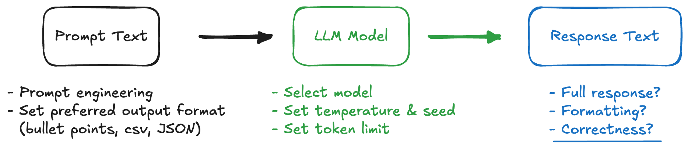
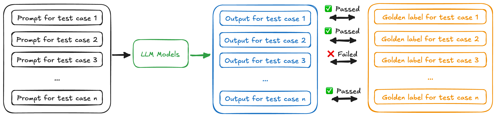

LLM Testing#
LLM Testing List#

Structure & Formatting
Length control: Ensure response respect token limits.
Output structure enforcement: Validate that responses follow required formats (e.g., bullet points, tables, JSON).
Consistency & Stability
Reproducibility: Set temperature and seed value.
Prompt sensitivity: Assess how changes in wording affect results.
Regression testing: Detect output changes over model versions.
Correctness: Check against expected answers or external source (exact match or similarity)
Prevent Hallucinations#
Give the model an option NOT TO ANSWER
Ask for EVIDENCE!
More advanced: ask the same question in multiple ways or request several answers that can be used to cross-validate each other
Check Correctness#

Generate a Golden Set
Manually curate a reference (golden) dataset
Develop a function to extract reference data from a database
Comparison Techniques
Exact Match: Direct match for labels like True/False, multiple choice (A/B/C/D), or numeric values
Partial Match: Verify presence of key phrases within the response
Semantic Similarity: Compute cosine similarity between embedding vectors to assess meaning-based closeness
Lab 2: Extract severance package information from text#
Testing strategy: Compare exact values
Go to lab2 folder
cd ../lab2
Draft your prompt
nano src/prompt.txtCreate your own
lab2/data/ref.csvwith two columnsfilenameandseverance_amount_refnano data/ref.csvScavenger hunt in
lab2/src/testing_lab2.py:Set up LLM output format
Create original dataframe
Load response
Compare output vs reference
Execute script
python src/testing_lab2.pyCheck out output in the
./logsand./output_*folder
Lab 3: Predict product category#
Testing strategy 1: Compare strings between LLM response and golden set
Testing strategy 2: Compute cosine similarity between embedding vectors to assess meaning-based closeness